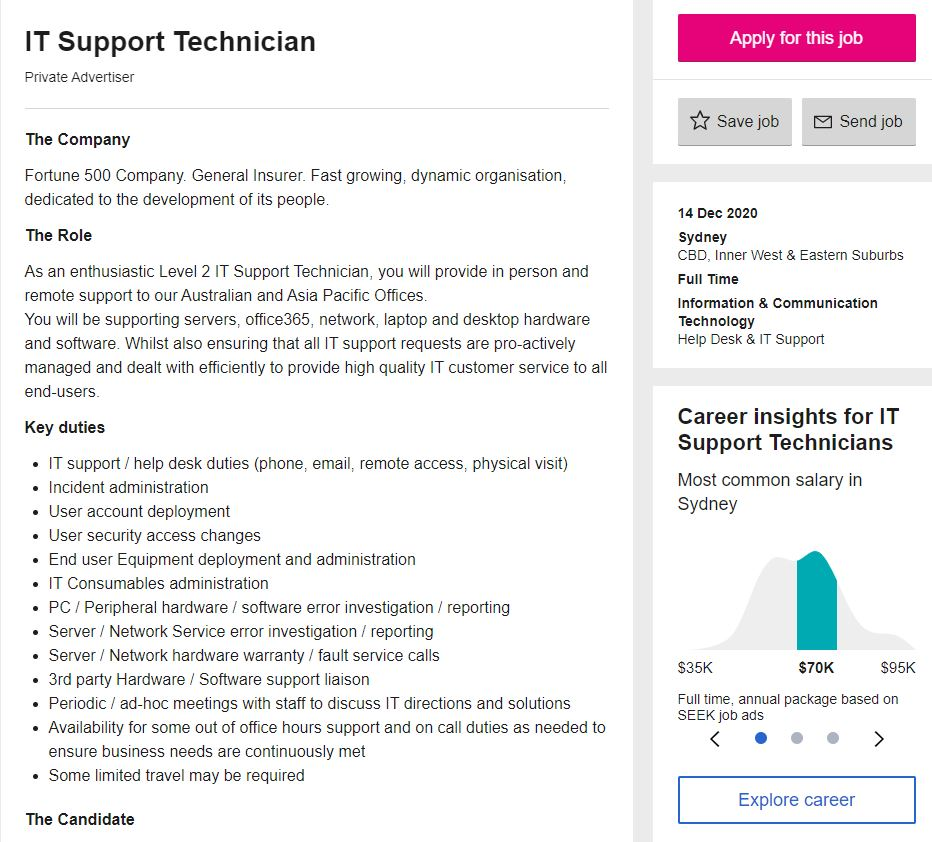
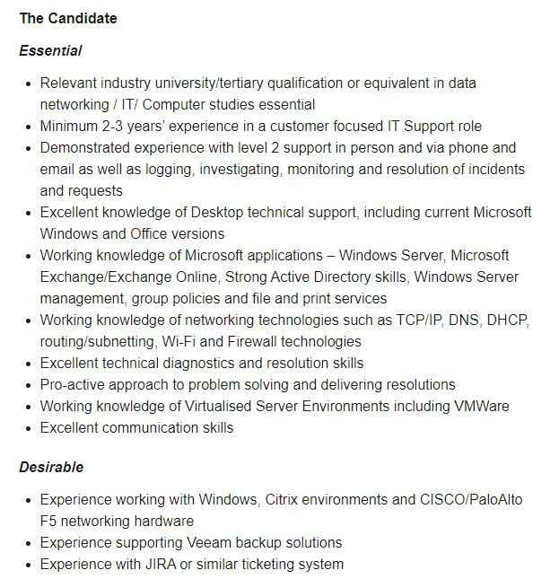

Ideal Job


Being an IT support technician revolves around the maintenance and instalment of computer systems and technology.
They are also used to troubleshoot and solve technical issues which can be hardware or software related. This job is
appealing to me as I would be able to help both ordinary people and larger businesses when they are facing technical
problems that they cannot solve by themselves.
IT support technicians must have a wide range of skills and experience in many aspects of Information
Technology. Some of these skills may include hardware/software instalment and troubleshooting, programming, networking, and
monitoring/maintenance of computer systems. A good IT support technician can work well in groups, communicate effectively, and
have great customer service.
Currently I have no formal qualifications or skills needed for the role of IT support technician. My
understanding of IT is overly broad with only a few weeks of learning specific areas within the subject.
To gain the skills needed for the role, I will first need to complete a Bachelor of Information Technology.
The degree will take 3 years of full-time study to complete and will be started in March of 2021. In 2024 after the degree completion,
I will be qualified to work in a low-level Help Desk/IT support environment which I can utilise to hone and develop my skillset. There
are a variety of entry-level help desk and IT jobs that will give me an effective, hands-on learning approach to IT support and often
involve working in a team with other experienced technicians. Working with other experienced technicians would aid my learning greatly
as they can provide valuable feedback and challenge my perspective on certain topics or methods of work. I can also complete other
courses/certificates such as “Windows Server 2016 Certification”, and the “CompTIA A+” program, which I will then use as qualifications
to show my experience and knowledge to the employer for an IT support technician role. Both programs can be completed concurrently and
will take under a year to complete, allowing me to have a bachelor’s degree and two recognised certifications within 4 years of study.
Books such as “Tools and Weapons” by Brad Smith and Carol Ann Browne can be read to further supplement learning at my own pace. The book
revolves around how technology is not only empowering, but also threatening us, which includes topics such as privacy and cyberattacks.
I believe these topics are especially important and will only gain more significance as we progress into a tech driven world where our data
and privacy are at risk.